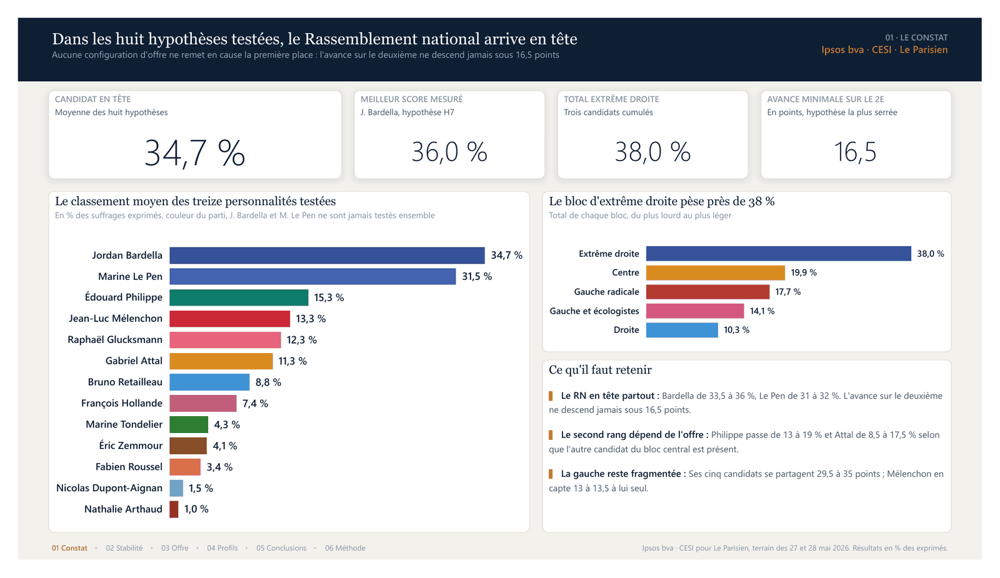
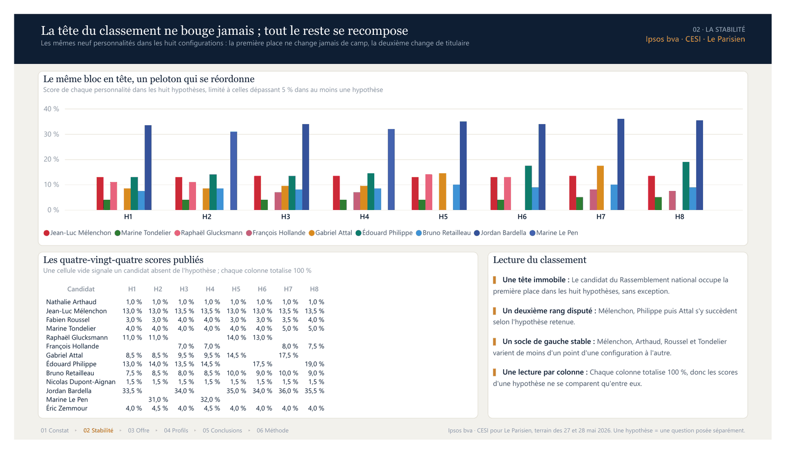
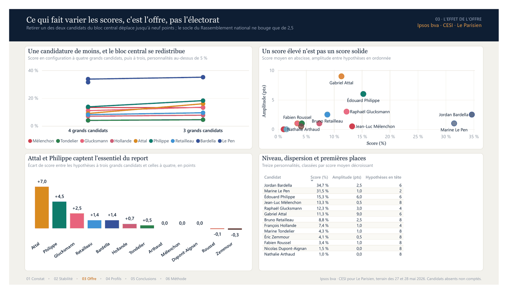
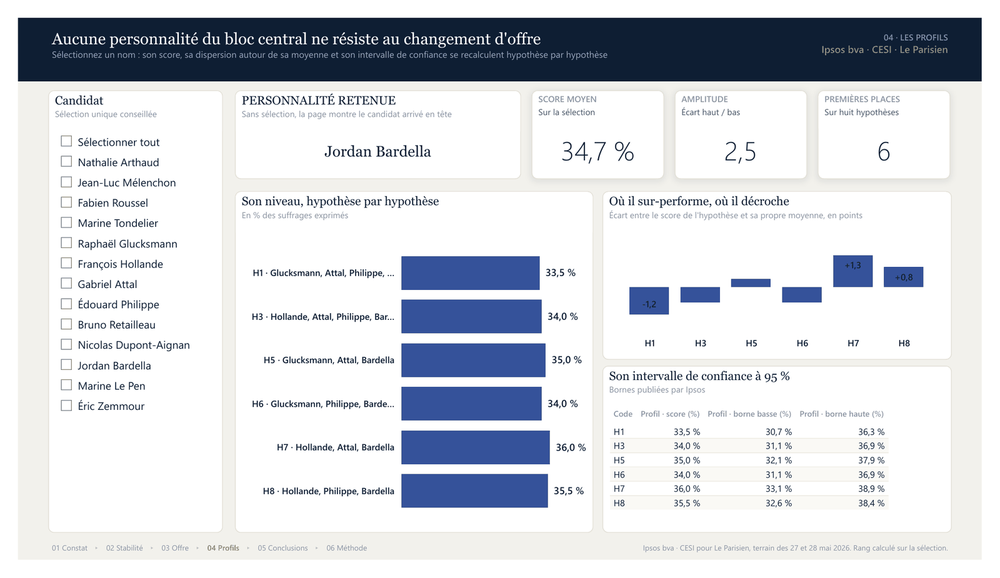
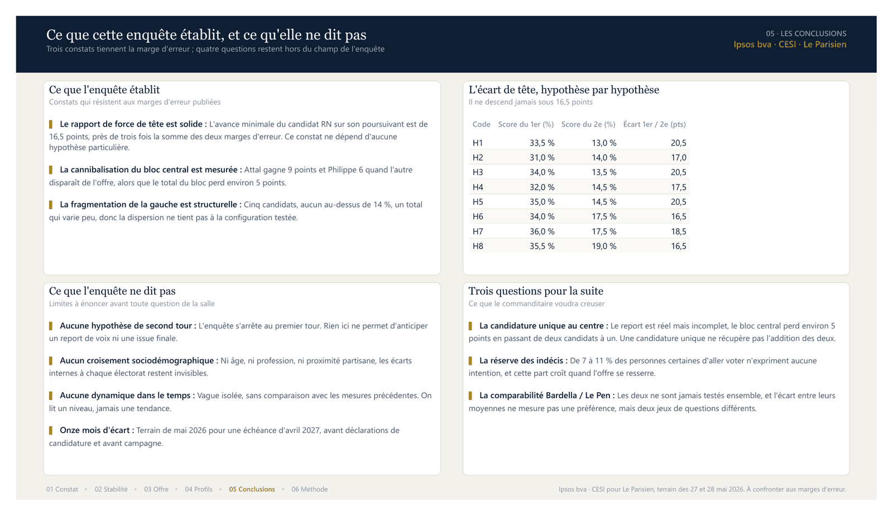
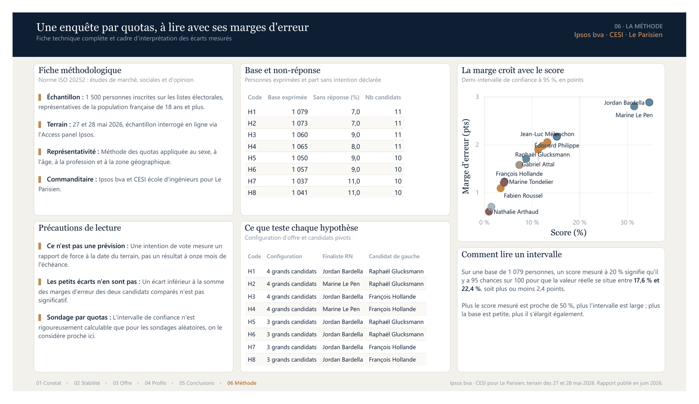

L'enquête ne mesure pas une intention de vote, elle en mesure huit. Ce rapport Power BI répond à une seule question : qu'est-ce qui reste vrai quelle que soit l'hypothèse testée, et qu'est-ce qui ne dépend que de la configuration d'offre ?
Le classement moyen des treize personnalités, le poids des cinq blocs politiques et les quatre indicateurs de cadrage. L'avance du premier sur le deuxième ne descend jamais sous 16,5 points, soit près de trois fois la somme des deux marges d'erreur.

Les neuf personnalités qui dépassent 5 % dans au moins une hypothèse, confrontées hypothèse par hypothèse, et les quatre-vingt-quatre scores publiés. Une cellule vide signale un candidat absent de l'hypothèse, pas un score nul.

Retirer une des deux personnalités du bloc central déplace jusqu'à neuf points, alors que le socle du Rassemblement national ne varie que de 2,5. Le nuage de points sépare les scores élevés des scores solides.

Page pilotée par la sélection d'un candidat : son niveau hypothèse par hypothèse, ses écarts à sa propre moyenne et son intervalle de confiance à 95 %. Sans sélection, la page montre le candidat arrivé en tête.

Trois constats qui tiennent la marge d'erreur, quatre questions hors du champ de l'enquête, et l'écart de tête hypothèse par hypothèse.

Fiche technique complète, base et non-réponse par hypothèse, contenu de chaque hypothèse, et lecture de l'intervalle de confiance. La marge croît avec le score mesuré et s'élargit quand la base diminue.

Les sept pages, les soixante-sept visuels, le modèle sémantique et les fichiers CSV sont produits par cinq modules Python. Une correction se fait dans le code, puis on régénère.
Une table de faits de quatre-vingt-quatre lignes, deux dimensions, une table de mesures sans données. La mesure fondatrice moyenne les scores sur les hypothèses du contexte au lieu de les additionner.
Les quatre-vingt-quatre scores, les marges d'erreur, les bases et les taux de non-réponse proviennent du rapport public de l'enquête, saisis à l'identique. Un contrôle vérifie que chaque hypothèse totalise 100 %.